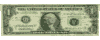
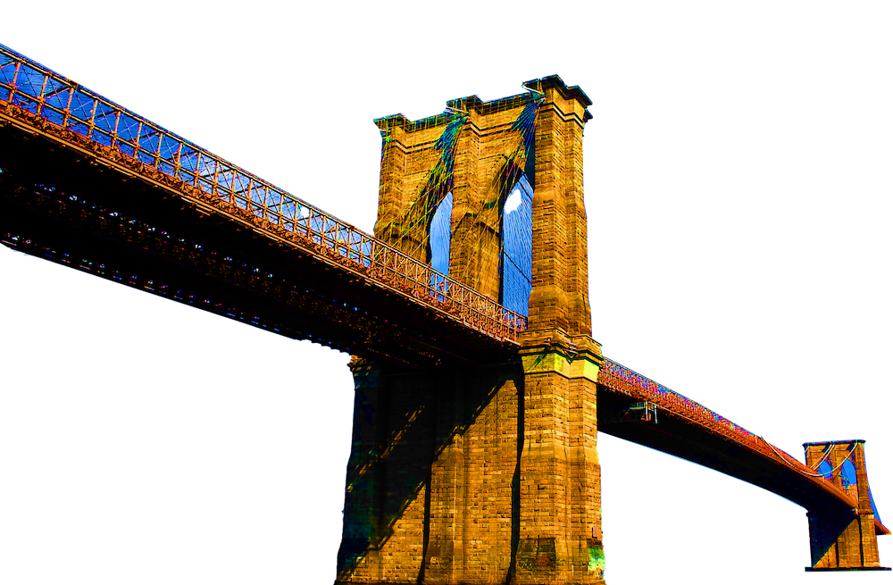
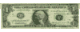
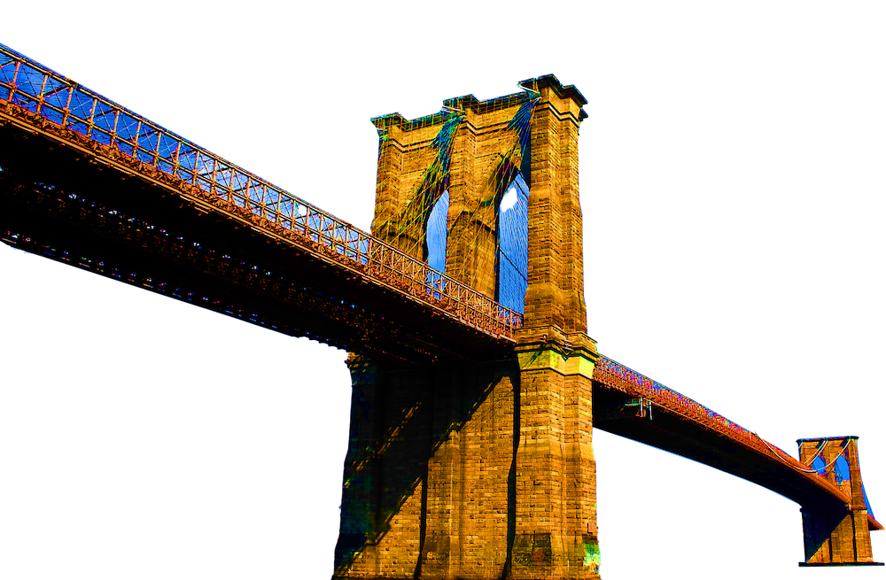

On an upper level of the Pier 17 pavilion in Lower Manhattan, a shop called Seaport Dollars marketed a stack of “freedom dollars” featuring the face of Gov. Jan Brewer of Arizona. They clustered next to a bobblehead doll of President Obama and the apparently severed head of a bald mannequin. Detached arms, legs and naked torsos were splayed across the floor.
“Give me a price,” the store’s proprietor said, noticing a visitor’s interest in the half-bodies.
It was an inglorious end for the pavilion, South Street Seaport’s 28-year-old hub, whose introduction inspired protests from community groups asking for more open space, but also hope that a strong retail presence would drive visitors to the historic seaport area.
There were bustling times, cresting perhaps in the early 1990s, as Wall Street workers came for the seaside lunches and returned for liquid dinners on Friday nights, when the pier moonlighted as a sprawling singles bar.
But the area eventually devolved into what critics feared it would always be: a suburban-style shopping center unworthy of its real estate, pairing a privileged view of the Brooklyn Bridge with $10 massages and Arthur Treacher’s Fish and Chips.
The pavilion closed officially at 9 p.m. on Monday. It will be demolished and replaced by a retail and entertainment center, with developers promising a greater emphasis on open space.
In its final moments, the mall’s yawning corridors were nothing if not open; the empty passageways and mostly vacated storefronts inspiring something resembling an Irish wake, if such a thing exists for gift shops and food court fare.
“This is the saddest day for New York,” said Gloria Johnson, 60, wading through the shops on the first level. “The saddest day.”
Her grief was interrupted once she spotted a trinket called Dr. Freud’s Therapy Ball. “Everything’s a dollar?” she said.
She shook the toy, which resembled a Magic Eight Ball, and listed the answers it provided: “Go to your happy place.” “Are you taking your meds?” And, eventually, “Let’s move on.”
At Pacific Grill, a seafood restaurant with outdoor seating, one regular, Wayne Rose, 53, offered this elegy: “They survived Sandy. But they didn’t survive the developer.” (A manager, Sal Himani, said the restaurant hoped to return to the pier after the demolition.)
At a souvenir shop inside, a sign was pasted to the front window: “It’s your last chance to have memory with Cartoon World.”
The shop’s owners, Yanfang Chen, 34, and her husband, Henry Lin, 39, had planned to pack their remaining items into the family’s van early and return to Maspeth, Queens.
But as the 9 p.m. deadline approached, the store remained too busy to close. Perhaps this was because the couple began ad-libbing discounts — “two for $1,” Mr. Lin said, as a customer lingered near the bottle-opening key chains — or, failing that, giving away stuffed animals in a bid to lighten their load.
One man asked if the store would return after the pier reopened. Ms. Chen shook her head.
The center, originally developed by the Rouse Company, is currently owned by the Howard Hughes Corporation of Dallas. The new structure is expected to allow better views of the bridge and enhanced outdoor space on either side of the pier — addressing some complaints that have dogged the pavilion since its inception. At a Planning Commission hearing last year, an official for the New York City Economic Development Corporation said the mall had “basically been a disappointment to everyone over its life.”
But proprietors acknowledged that the shops could have done more to attract a local audience. At a Christmas decoration shop upstairs, there were ornaments with a Baltimore Orioles logo and an ambulance bearing the message “wicked good paramedic” in blue lettering.
Shortly after 9 p.m., the last doors began to close, though store operators said they were to be allowed back on Tuesday for a final sweep. A guard fastened caution tape around the handles of the deck entrances. Workers pushed cabinets and other bulky pieces on hand trucks. One particularly skilled crew maneuvered an ice machine across the top level’s uneven surface by placing dining trays beneath its legs.
An hour earlier, the group had lugged a five-door soda cooler down the stairs, testing an elaborate system of wheels, human anchors and profanity-based motivational speaking. “Touchdown!” one worker yelled as the cooler reached the wooden decking of the pier.
But inside, the commerce was not yet complete. Lucy Davis, 76, who said she had lived in the neighborhood for nearly 30 years, shuffled through a poster shop with her last $10. She bought two dolls, adding to a bagged collection that included an umbrella, a phone case and a red scarf to wrap around her curly white hair.
This haul did not include the 13 hats she bought earlier and took home to Beekman Street, she said, nor the messenger bag hanging off her right shoulder, with an assembly of skulls etched on the front.
“I got it today!” she said. “One dollar!”